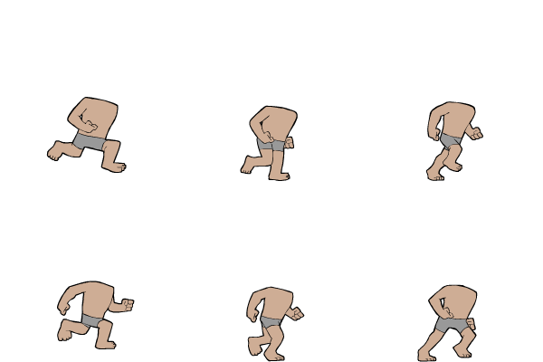
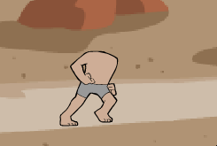

Animationen
Um beliebige Elemente zu bewegen (z.B. einen Kreis) reicht es die x- und y-Koordinaten beim Zeichnen ändern. Darauf wird hier nicht weiter eingegangen. Hier wird erklärt wie man ein Bild animieren kann.
Grundsätzlich ist eine Animation nichts anderes als eine Serie von Bildern die nacheinander angezeigt werden. Dafür braucht man als erstes die Bilder in allen Bewegungsphasen. Als Beispiel arbeiten wir hier mit dem Körper eines rennenden "Männchens". Die Animation besteht aus folgenden sechs Bildern:

Zeichnet man diese 6 Bilder in schneller Folge hintereinander, so entsteht die Illusion von Bewegung:

Wie du das erreichst hängt stark davon ab wie genau du die Bilder vorliegen hast. Im Beispiel sind alle Animationsphasen auf einem Bild und man muss lediglich verschiedene Bildausschnitte des selben Bildes anzeigen. Hast du alle Bilder separat vorliegen, so musst du alle Bilder in einer Liste (oder in separaten Variablen) laden und danach der Reihe nach anzeigen.
Für das Beispiel-Bild oben könnte das wie folgt aussehen:
Als erstes musst das Bild laden um es dann später (in der Hauptschleife) zu verwenden.
runner = pygame.image.load("runner_asset.png").convert_alpha()
Das Beispielbild ist 600 x 400 Pixel. Somit ist jede der sechs Animationsphase 200 x 200 Pixeln gross. Du kannst also zwei Variablen für die Position der Animationsstufen einführen. In diesen Koordinaten bezeichnet (0,0) das Bild links oben und (2,1) das Bild rechts unten.
runner_x = 0
runner_y = 0
Beim Zeichnen von Bildern erlaubt es pygame einen Teil des Bild auszuschneiden (Corp). Du kannst also die Variablen runner_x und runner_y verwenden um die linke obere Ecke jeder Animationsstufe innerhalb des Bildes zu berechnen und dann das entsprechende 200 x 200 Segment des Bildes zu zeichnen.
crop = (200*runner_x, 200*runner_y, 200, 200)
FENSTER.blit(runner, (500, 400), crop)
Je nach Verwendung (wann bzw. in Bezug zu was soll die Animation laufen) brauchst du nun nur noch die Variablen runner_x (Bereich 0-2) und runner_y (Bereich 0-1) so zu verändern, dass zum richtigen Zeitpunkt ein anderes Bild gezeichnet wird.
Beispiel "Männchen" von opengameart.org